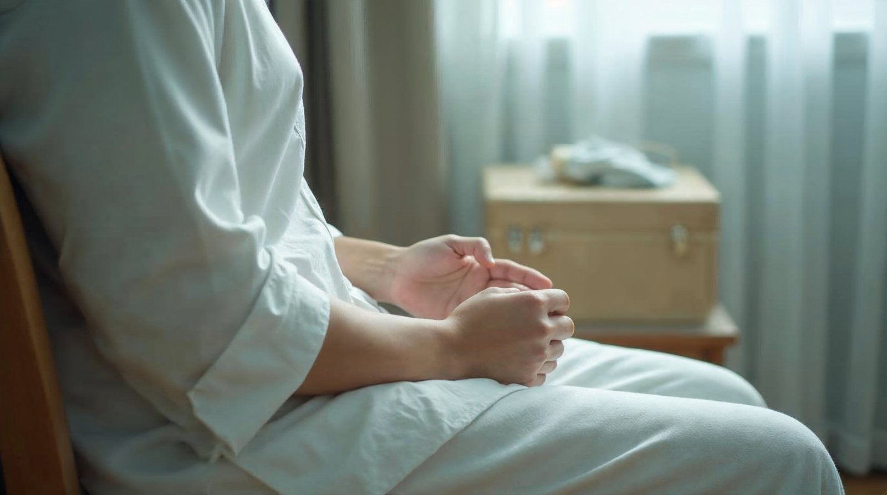
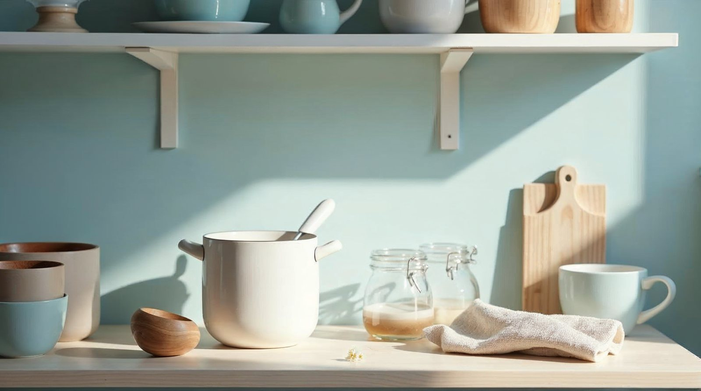
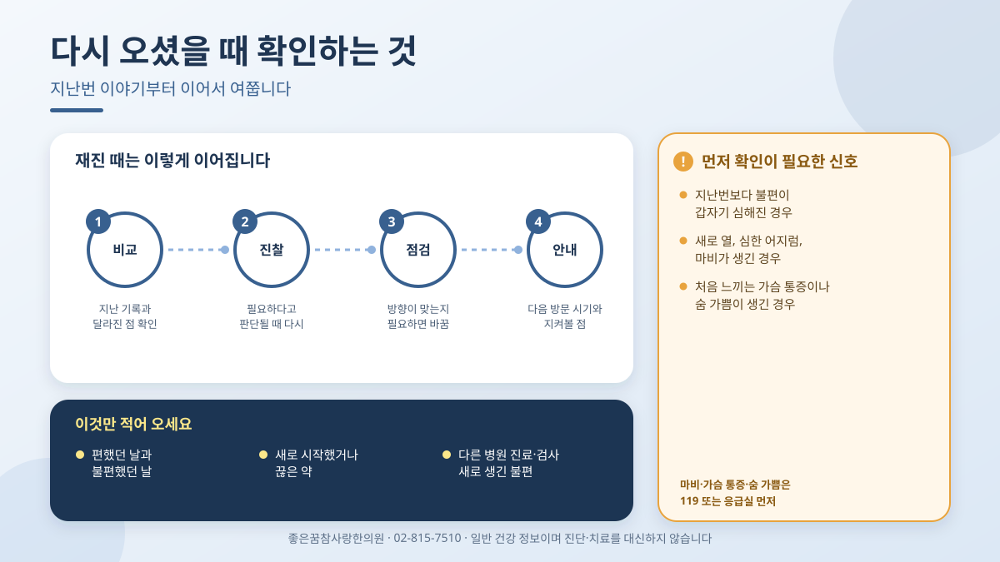

이종호 한의사 감수좋은꿈참사랑한의원 대표원장 (한의사 면허번호 19769)발행 2026-11-23 · 수정 2026-11-26
이 글의 차례
재진 때는 처음부터 다시 묻지 않고, 지난번에 나눈 이야기에서 시작합니다. 그사이 불편이 어떻게 흘러갔는지, 잠과 식사는 어땠는지, 새로 드신 약은 없는지 여쭙고 다시 맥을 짚은 뒤, 치료를 그대로 이어 갈지 바꿀지 정합니다.
다시 오기로 한 날 아침, 출근 준비를 하다가 문득 생각이 납니다. 지난주에 내가 어디가 어떻다고 했더라. 나아진 것 같기도 하고 그대로인 것 같기도 한데, 들어가서 뭐라고 말하지. 그런 마음으로 진료실 문을 여시는 분이 생각보다 많습니다.
그 걱정은 내려놓으셔도 됩니다. 지난번 이야기는 제가 기록과 함께 가지고 있습니다. 잘 모르겠다는 말로 시작하셔도 괜찮습니다. 거기서부터 제가 하나씩 여쭙겠습니다.
처음 오신 분께 "요즘 잠은 어떠세요?" 하고 묻는 것과, 얼굴을 기억하는 분께 "지난번에 자다가 깨신다고 하셨지요. 그건 요즘 어떠세요?" 하고 묻는 것은 다릅니다.
앞의 질문에는 새로 알아 가는 일이 있고, 뒤의 질문에는 제가 들은 말을 잊지 않았는지 확인받는 일이 있습니다. 저는 재진의 가치가 거기에 있다고 생각합니다.
왜 지난번 이야기부터 이어서 여쭐까요
같은 질문을 또 하나 싶으실 수 있습니다. 불편이 얼마나 달라졌는지는 지난번과 나란히 놓아야 보입니다. 그래서 지난번에 여쭌 것을 같은 방식으로 다시 여쭙니다. 같은 자로 재야 차이가 드러나니까요.
처음 오셨을 때 환자분도 저도 잘 알지 못했던 것이 두 번째 만남에서 드러날 때가 있습니다. 첫날 그저 "잠을 잘 못 자요"라고 하셨던 분께, 다음에는 잠이 안 들었던 건지 자주 깼던 건지, 돌아보니 어느 쪽이 더 힘드셨는지 여쭤볼 수 있습니다.
첫날 귀가하시기 전에 저는 다음번까지 어떤 변화를 눈여겨보시면 좋을지 말씀드립니다. 재진의 첫 질문은 대개 거기서 나옵니다. 아침 첫걸음을 지켜봐 달라고 했다면, 다음에는 그 첫걸음이 어땠는지부터 여쭙는 식입니다.
여러 번 뵙다 보면 지난번에는 제가 대충 알아들었던 말이 이번에는 조금 더 분명해집니다. 참관하러 온 선생님들께 저는 이것을 환자분 말과 진맥이 조금씩 '싱크가 된다'고 표현하곤 했습니다.
맥도 같은 분에게서 늘 같지는 않습니다. 그날의 피로와 긴장에 따라 손끝에 닿는 느낌이 달라질 수 있지요. 지난번 맥을 기억해 두는 것만으로는 모자라고, 오늘 다시 짚어 지난번과 견주어 봐야 하는 까닭입니다.
그사이 생활에서 생긴 일도 몸에 흔적을 남깁니다. 야근이 이어졌거나, 이사를 했거나, 시험 기간이었거나, 감기를 앓았다면 오늘의 맥과 불편을 읽는 방향이 달라질 수 있습니다.
새로 시작한 약이나 건강식품이 있으면 진료 방향을 다시 점검해야 할 수 있습니다. 방문 간격이 벌어졌다면 그사이 불편이 어떻게 흘러갔는지부터 짚어야 다음 순서를 정하기 쉽습니다.
먼저 이렇게 여쭙니다
- 지난번 진료 뒤 불편한 정도가 어떻게 달라졌나요?
- 치료 뒤 하루 이틀 동안 몸은 어땠나요?
- 일상에서 달라진 동작이나 시간대가 있나요?
- 잠, 식사, 소화에 변화가 있나요?
- 그동안 새로 먹기 시작한 약이나 음식이 있나요?
- 지난번에 이야기한 생활 습관을 해 보셨나요?
이 질문을 맥을 짚기 전에 한꺼번에 다 드리지는 않습니다. 양손을 내어 주신 동안에도 계속 여쭙고, 대답을 들으며 손끝의 느낌을 다시 맞춰 봅니다.
맥을 짚고 떠올린 제 생각에는 늘 고칠 여지가 있습니다. "그건 아닌데요" 하시면 저는 거기서부터 다시 듣습니다. 자기 몸에서 언제 무슨 일이 일어나는지 가장 오래 지켜본 분은 제 앞에 앉은 그분이니까요.
한약을 드신 분께는 챙겨 드실 만했는지, 드신 뒤 속은 어땠는지부터 여쭙습니다. 제가 좋겠다고 생각해서 드린 치료가 그분의 하루에서는 어땠는지, 그 대답은 다음에 만나야 들을 수 있습니다.
해 보기로 한 일을 다 못 하셨어도 괜찮습니다
한 상담에서 저는 올 때마다 맥을 짚으면서 생활 습관 이야기를 계속 드리겠다고 말씀드린 적이 있습니다. 돌이켜 보면 꽤 잔소리처럼 들렸을 겁니다. 그러니 다 지키지 못한 채 진료실 문을 여는 발걸음이 무거우실 수도 있습니다.
그래서 다음에 뵈면 제가 했던 말을 또 하기 전에 먼저 여쭙고 싶습니다. 해 보니 어땠는지, 생활 속에서 무엇이 어려웠는지. 지키기 어려웠던 사정까지 듣고 나야 다음 이야기를 함께 정할 수 있습니다.
사람은 생각보다 쉽게 낙담합니다. 저는 처음부터 큰 목표를 잘 드리지 않고, 해낼 수 있는 만큼을 함께 정하려고 합니다. 못 지킨 날이 있었다면 스스로를 탓하지 마시고 다음 날 다시 하시면 됩니다.
예를 들어 저녁마다 걷기로 해 놓고 일주일에 두 번밖에 못 걸으셨다면, 저는 그 두 번이 언제였고 무엇이 걷게 했는지가 더 궁금합니다. 다음 계획은 거기서 나옵니다. 너무 컸던 약속이라면 크기를 줄이면 됩니다.
동네 복지관에서 어르신들께 드린 말씀이 있습니다. 힘이 있는 날에만 하지 말고, 힘이 없는 날에는 힘이 없는 만큼 하시라는 것이었습니다. 재진 때 제가 듣고 싶은 것도 잘된 날의 기록보다, 힘이 없던 날 어디까지 하셨는지입니다.

재진 때 하는 일
다시 오시면 저는 지난 기록을 먼저 보고, 처음 오신 날과 마찬가지로 맥부터 짚습니다. 손목을 짚은 채로 지난번 가장 불편하셨던 곳이 어떻게 변했는지 여쭙습니다.
서둘러 오셨다면 잠시 앉아 숨을 고르신 뒤에 짚습니다. 걸어오신 직후에는 맥이 달라지기 때문입니다. 필요하다고 판단될 때는 혀와 배, 움직임을 다시 살피고, 지난번에 아팠던 동작과 자리를 오늘과 비교해 봅니다.
맥이 지난번과 어떻게 다른지, 몸이 어떻게 달라지고 있는지 설명해 드리는 것도 이때입니다. 같은 치료를 기계적으로 되풀이하지 않으려고 합니다.
몸의 변화에 맞춰 치료 부위와 방법을 다시 정하기 때문에, 지난번과 같은 치료를 받으실 수도 있고 다른 치료를 받으실 수도 있습니다. 가장 아픈 곳은 원장이 직접 치료하고, 그 밖의 불편한 곳은 직원이 자기장·온열·패드형 물리치료로 이어서 살핍니다.
침을 놓을 때는 한의사가 직접 가서 보게 됩니다. 그 짧은 시간에도 지난번과 무엇이 달라졌는지 묻습니다. 치료를 마치면 "시원하세요? 괜찮으세요?" 하고 여쭙고, 불편하다고 하시면 다시 봅니다.
치료 부위와 반응은 기록해 두고, 다음 방문 때 달라진 점부터 다시 여쭙습니다. 담당 원장이 바뀌는 날에도 이전 진료 내용을 참고할 수 있도록 기록을 함께 봅니다. 여러 원장이 함께 진료하는 경우에도 일정 기간마다 제가 다시 맥을 확인합니다.
초반에 자주 얼굴을 보여 주시면 제가 놓치는 것이 줄어듭니다. 그 뒤로는 흐름을 보며 간격을 넓히고, 언제 마칠지도 이렇게 쌓인 이야기를 놓고 함께 정합니다.
같은 무릎 통증도 맥에 따라 갈래가 나뉩니다
복지관 강연 때 무릎이 시리다고 하신 분께 저는 그 자리에서 답을 드리지 않았습니다. 진맥을 해 보아야 했기 때문입니다. 같은 "무릎이 시리다"여도 맥과 몸의 상태에 따라 살피는 방향을 다르게 잡습니다.
어디의 힘이 부족한지, 어디가 막혀 있는지, 잠과 소화는 어떤지를 함께 봅니다. 한의학에서는 나이가 들어 기와 혈이 부족해지면 다리에 힘이 빠지고 무릎과 허리 관절이 약해진다고 봅니다. 그럴 때 쉬기만 하면 근력이 더 떨어질 수 있어, 통증 정도에 맞는 활동 범위를 함께 정합니다.
무릎만 그런 것이 아닙니다. 기운을 아껴야 하는 맥이 있고, 쌓인 열을 풀어야 하는 맥이 있습니다. 상담에서 저는 이렇게도 말씀드립니다. "힘이 없어서 몸이 무거운 것과 살이 쪄서 무거운 것은 다릅니다. 차로 치면 연료가 부족한 상태인지부터 봅니다."
그래서 재진 때 몇 번 받고 덜 아프다는 말씀만으로 바로 판단하지 않으려고 합니다. 통증이 사라진 직후보다, 다시 일상 동작을 해 보셨을 때 괜찮았는지를 더 눈여겨봅니다. 처음 함께 정한 방향과 오늘의 맥을 나란히 놓고 이번에 할 일을 정합니다.
그렇다고 정해진 횟수를 채우셔야 한다는 뜻은 아닙니다. 그사이 몸이 어떻게 지냈는지를 들어야 다음 걸음을 정할 수 있어서, 다시 오시는 날의 이야기가 저에게는 소중합니다.
달라진 것과 그대로인 것을 나누어 듣습니다
어떠셨느냐고 여쭈면 그냥 비슷하다는 대답이 자주 돌아옵니다. 그럴 때 저는 질문을 조금 쪼갭니다. 아픈 정도는 그대로여도 아픈 시간이 짧아졌는지, 같은 동작에서만 아픈지, 밤에 깨는 횟수는 어땠는지요.
경과를 볼 때 제가 하려는 일은 나아졌다고 말씀드리는 것이 아닙니다. 처음 말씀하신 증상을 하나씩 다시 짚어 보고, 이번에는 무엇부터 할지 정하는 것입니다.
아픈 곳은 그대로인데 어제는 조금 편히 주무셨다는 말씀도 좋습니다. 반대로 처음 불편은 줄었는데 다른 곳이 새로 불편해졌다면, 두 가지를 섞지 말고 나누어 말씀해 주세요.
오른쪽이 덜하니 이번에는 왼쪽이 아프다는 말씀도 자주 듣습니다. 한쪽이 많이 불편할 때는 다른 쪽 불편을 덜 느끼다가, 한쪽이 줄면서 반대쪽이 드러나는 경우가 있습니다. 그래서 새로 불편해진 곳이 생기면 처음 자리와 함께 그 위아래 근육까지 다시 봅니다.
지난번에 제가 짚은 곳보다 실은 다른 데가 더 불편하다는 말씀도 괜찮습니다. 그 말을 꺼내기까지 시간이 걸렸을 수 있습니다. 저는 그 이야기를 들으면서 다시 손목을 짚겠습니다.
예를 들어 허리 때문에 다니시는 직장인이 그사이 야근이 몰렸다면, 아픈 정도와 함께 몇 시에 주무셨는지, 하루 몇 시간 앉아 계셨는지를 여쭙습니다. 불편이 그대로인 이유가 그 주의 생활에 있을 수도 있어서입니다.
걷기를 좋아하시는 분이 발바닥 통증으로 다니신다면, 얼마나 걸으셨는지와 걸은 다음 날 첫걸음이 어땠는지를 여쭙습니다. 그리고 어느 만큼까지 걸어도 될지 다시 함께 정합니다.

한약을 드시는 중이라면
한약은 처음부터 길게 정하기보다, 대개 15일 정도 단위로 드신 뒤 몸의 반응을 듣고 다음을 정합니다. 남은 약이 닷새쯤일 때 연락 주시면 그대로 이어 갈지, 처방을 조정할지 상의하기 좋습니다.
그때도 맥을 다시 짚고 혀를 보면서 여쭙습니다. 속 이야기와 함께 대변과 잠은 어땠는지, 정해진 시간에 챙겨 드시기는 괜찮았는지요. 같은 처방이라도 사람마다 소화나 잠의 반응이 다를 수 있어서입니다.
"진맥까지 보고 맞춰 드리면, 억지로 참고 드실 일이 줄어듭니다." 상담에서 제가 자주 드리는 말입니다. 드시기 힘들었던 날이 있었다면 참고 넘기지 마시고 다음 진료 때 그대로 말씀해 주세요.
드시다가 평소와 다른 불편이 생기면 복용을 멈추고 바로 전화로 알려 주세요. 약 때문인지 아닌지 몰라도 괜찮습니다. 다니시는 병원에서 받은 약은 처방한 의사와 상의 없이 끊지 마시고, 드시는 그대로 알려 주시면 됩니다.
일상에서 먼저 해 볼 수 있는 것
- 치료 다음 날과 사흘쯤 뒤에 몸이 어땠는지 한 줄씩 적어 두기
- 해 보기로 한 생활 습관은 한 날만 달력에 표시해 두기
- 새로 받은 약은 받은 날 이름이 보이게 사진으로 남겨 두기
- 다음에 꼭 묻고 싶은 것 하나를 휴대전화 메모에 적어 두기
기록이 거창할 필요는 없습니다. 잘 지냈다는 한 줄보다 화요일 밤에 두 번 깼다는 한 줄이 저에게는 더 많은 것을 알려 줍니다.
진료와 진료 사이에 달라진 점이 있으면 다음 예약일까지 담아 두지 마시고 전화(02-815-7510)로 알려 주세요. 그날의 변화도 지난 이야기에 이어서 함께 보겠습니다.
한의원에서 함께 살필 수 있는 경우
- 오래 다니다 보니 달라진 점을 스스로 말하기 어려운 경우 지난 기록과 함께 짚어 봅니다.
- 편해진 부분과 그대로인 부분이 섞여 있는 경우 따로 나누어 살핍니다.
- 일이 바빠 방문 간격이 불규칙해진 경우 생활에 맞는 간격을 함께 정합니다.
- 처음 불편은 줄었는데 다른 곳이 새로 불편해진 경우 두 가지를 나눠서 함께 살핍니다.
처음 오시면 접수, 상담, 진맥과 필요하다고 판단될 때의 진찰(설진·복진·초음파 등), 상태에 맞는 치료, 귀가 전 안내 순서로 진행합니다. 다시 오시면 지난번 이야기부터 이어서 여쭙습니다.
지난번에는 저에게, 이번에는 조영기 원장이나 정원영 원장에게 진료를 받게 되더라도 처음부터 다시 설명하지 않으셔도 됩니다. 기록을 함께 보고 이어서 여쭙고, 판단이 달라지는 부분이 있으면 그 이유를 말씀드립니다.
특정 원장의 진료를 원하시면 예약하실 때 미리 말씀해 주세요. 진료 일정에 맞춰 안내해 드립니다.
이렇게 기록해 오시면 상담이 쉬워집니다
- 지난 진료 뒤 편했던 날과 불편했던 날
- 새로 먹기 시작했거나 끊은 약
- 안내받은 생활 요령을 해 본 날과 어려웠던 점
- 다음 방문이 가능한 요일과 시간
- 그사이 받은 다른 병원 진료나 검사 결과
- 지난번 이후 새로 생긴 불편
오랜만에 다시 오셔도 괜찮습니다
한동안 발길이 끊겼다가 다시 예약하시면서 미안해하시는 분들이 있습니다. 미안해하실 일이 아닙니다. 중간에 쉬었다가 다시 시작하셔도 됩니다. 지난 기록을 함께 보며 그동안의 변화를 다시 여쭙고, 오시는 간격도 새로 정합니다.
오랜만이라면 그사이 다른 병원에서 받은 진단이나 검사, 새로 드시게 된 약을 먼저 알려 주세요. 처음 오셨을 때와 몸의 사정이 달라졌을 수 있어서, 그날은 조금 더 넓게 여쭙기도 합니다.
살림하고, 일하고, 누군가를 챙기느라 내 몸 차례가 자꾸 뒤로 밀리는 때가 있습니다. 저는 그런 시간에도 몸이 그 사람을 기다려 주고 있다는 생각을 하곤 합니다. 그렇게 다시 시간을 내어 오신 걸음이 저는 반갑습니다.
이런 증상은 먼저 확인이 필요합니다
- 지난 진료 뒤 통증이 갑자기 크게 심해지거나 팔다리 힘이 새로 빠지는 경우
- 말이 어눌해지거나 가슴 통증·숨 가쁨이 새로 생긴 경우
이런 신호가 있으면 한의원보다 가까운 병원이나 응급실을 먼저 찾으세요.
다음에 오시는 날
저는 치료의 시작과 끝에 진맥이 있어야 한다고 말해 왔습니다. "맥을 읽어 드리고, 약을 드신 뒤 반응을 보고, 다시 맥을 짚습니다. 그렇게 함께 걸어가는 치료입니다."
함께 걷는 길이 어디를 향하는지도 말씀드리고 싶습니다. 밥때가 되면 편하게 먹고, 밤에는 쉬고, 아침에는 오늘 할 일을 시작할 힘이 있는 하루입니다. 제게 건강한 리듬은 그렇게 구체적입니다.
어느 분에게는 어깨 때문에 깨지 않고 아침까지 자는 일이 그 첫걸음일 테고, 어느 분에게는 식사 뒤 속이 어땠는지 스스로 살펴볼 여유가 생기는 것이 먼저일 겁니다. 어느 쪽인지는 오셔서 들려주세요.
다음에 제 진료실에서 "양손 한번 올려 보세요"라는 말을 들으시면, 지난번에 미처 못 하신 이야기 하나를 들려주셔도 좋겠습니다. 그리고 저는 지난번 가장 불편하셨던 그 자리가 요즘 어떤지, 그것부터 여쭙겠습니다.
함께 읽으면 좋은 글

여쭙는 것
- 지난번 진료 뒤 불편한 정도가 어떻게 달라졌나요?
- 치료 뒤 하루 이틀 동안 몸은 어땠나요?
- 일상에서 달라진 동작이나 시간대가 있나요?
생활에서 해 볼 것
- 치료 다음 날과 사흘쯤 뒤에 몸이 어땠는지 한 줄씩 적어 두기
- 해 보기로 한 생활 습관은 한 날만 달력에 표시해 두기
- 새로 받은 약은 받은 날 이름이 보이게 사진으로 남겨 두기
한의원에서 함께 살필 것
- 오래 다니다 보니 달라진 점을 스스로 말하기 어려운 경우 지난 기록과 함께 짚어 봅…
- 편해진 부분과 그대로인 부분이 섞여 있는 경우 따로 나누어 살핍니다.
- 일이 바빠 방문 간격이 불규칙해진 경우 생활에 맞는 간격을 함께 정합니다.
먼저 확인이 필요한 신호
- 지난 진료 뒤 통증이 갑자기 크게 심해지거나 팔다리 힘이 새로 빠지는 경우
- 말이 어눌해지거나 가슴 통증·숨 가쁨이 새로 생긴 경우
한눈에 보는 표
| 구분 | 핵심 |
|---|---|
| 여쭙는 것 | 지난번 진료 뒤 불편한 정도가 어떻게 달라졌나요? 치료 뒤 하루 이틀 동안 몸은 어땠나요? |
| 생활에서 해 볼 것 | 치료 다음 날과 사흘쯤 뒤에 몸이 어땠는지 한 줄씩 적어 두기 해 보기로 한 생활 습관은 한 날만 달력에 표시해 두기 |
| 한의원에서 함께 살필 것 | 오래 다니다 보니 달라진 점을 스스로 말하기 어려운 경우 지난 기록과 함께 짚어 봅니다. 편해진 부분과 그대로인 부분이 섞여 있는 경우 따로 나누어 살핍니다. |
| 먼저 확인이 필요한 신호 | 지난 진료 뒤 통증이 갑자기 크게 심해지거나 팔다리 힘이 새로 빠지는 경우 말이 어눌해지거나 가슴 통증·숨 가쁨이 새로 생긴 경우 |
자주 묻는 질문
지난번 기록을 제가 가져가야 하나요?
한의원에 지난 진료 기록이 있으니 따로 가져오지 않아도 됩니다. 다른 곳에서 받은 검사 결과는 가져오시면 참고합니다.
다시 갈 때도 진맥을 하나요?
네. 다시 오신 날도 맥을 짚고, 지난번과 비교해 몸이 어떻게 달라지고 있는지 말씀드립니다.
매번 같은 치료를 받나요?
그날 상태에 맞춰 방법을 정하므로 매번 같지 않을 수 있습니다.
오랜만에 다시 가도 이어서 진료받을 수 있나요?
네. 지난 기록을 함께 보며 그동안의 변화를 다시 여쭙고 이어서 살핍니다.
좋은꿈참사랑한의원은 재진 때 지난번 이야기부터 이어서 여쭙니다. 진료시간과 예약은 오시는 길에서 확인하세요.
어디서 상담받을 수 있나요?
좋은꿈참사랑한의원은 서울 동작구 만양로2길 2 신성빌딩 3층·5층(서울 동작구 상도동, 7호선 상도역 3번 출구 근처)에 있습니다. 한의사 3명(이종호 대표원장, 조영기 수석진료원장, 정원영 진료원장)이 진료합니다. 진료시간은 평일 09:30~20:00(점심 13:00~14:00), 토·일·공휴일 09:30~15:00이며, 방문 전 전화로 확인을 권합니다. 예약은 네이버 예약, 카카오톡 상담, 전화 02-815-7510로 받습니다.
이 글은 일반적인 건강 정보이며 개인의 진단이나 치료를 대신하지 않습니다. 증상이 있거나 복용 중인 약이 있다면 진료를 통해 확인하세요. 치료 효과는 개인마다 다를 수 있습니다.
작성 기준: 일반적으로 알려져 있는 건강 정보를 참고해 정리했습니다(대표원장 감수). 증상 기록은 1~2주 동안 하루 1회, 비슷한 시간에 적어 오시면 지난 상태와 비교하기 쉽습니다.